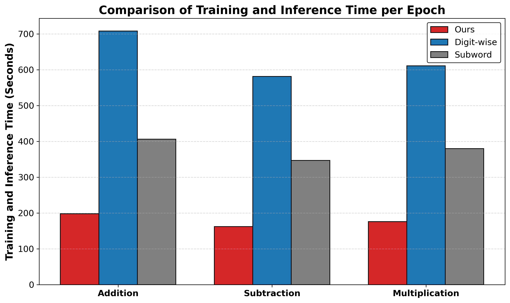

FNE: Precise Single-Token Number Embeddings via Fourier Features
Tianyi Zhou,
Deqing Fu,
Mahdi Soltanolkotabi,
Robin Jia,
Vatsal Sharan
tzhou029@usc.edu,
deqingfu@usc.edu,
soltanol@usc.edu,
robinjia@usc.edu,
vsharan@usc.edu
Fourier Number Embedding (FNE)
directly maps numbers into their Fourier representations, bypassing the tokenization step entirely.
with Better Efficiency and Accuracy.
Tokenization Comparison for 12345.6789
| Tokenizer | Tokenized Representation | Tokens Used |
|---|---|---|
| GPT-4, LLaMA3.2 (BPE) | 123 45 . 678 9 | 5 |
| LLaMA2 (Digitwise tokenization) | 1 2 3 4 5 . 6 7 8 9 | 10 |
| FNE (Ours) | 12345.6789 | 1 |
Accuracy Comparison
| Model Name | Description | Accuracy |
|---|---|---|
| GPT-J | Pretrained model, evaluated on integer addition for values up to 2-digit numbers. | 80.5% |
| Pythia-6.9B | Pretrained model, evaluated on integer addition for values up to 2-digit numbers. | 77.2% |
| Llama3.1-8B | Pretrained model, evaluated on integer addition for values up to 2-digit numbers. | 98.0% |
| Ours | Trained from scratch, evaluated on integer addition up to 6-digit numbers. | 100% |
| Ours | Trained from scratch, evaluated on integer addition up to 50-digit numbers. | 98.4% |
Training and Inference Efficiency
Data Efficiency

Methods

(b) Use FNE to map each number to its embedding; the first two entries represent 18 mod 10, the next two 18 mod 100.
(c) Pad FNE with zeros, add it to word embeddings, and feed into the model.
(d) For each digit, take two entries from the last hidden state and find the closest number.
Why Design Like This?
As discussed in our pervious work [Tianyi et al. (NeurIPS 2024)],
LLMs naturally learn Fourier Features during pre-training. With these Fourier features, models are able to perform arithmetic with perfect accuracy.
However, due to the limitation of tokenization, LLMs can only embed numbers up to 520.
Below, we provide a simplified illustration of how pre-trained LLMs embed numbers and how this leads to Fourier Number Embedding (FNE).
Each column represents a wave function, using either cosine or sine with different periods.
For a given number \( x \), some entries in its embedding encode \( \cos\left(\frac{2\pi}{10} x\right) \), while others encode \( \sin\left(\frac{2\pi}{10} x\right) \).
Given \( \cos\left(\frac{2\pi}{10} x\right) \) and \( \sin\left(\frac{2\pi}{10} x\right) \), by using \( \arctan \), we can determine \( x \bmod 10 \), effectively extracting the number's unit digit.
As shown in our previous work [Tianyi et al. (NeurIPS 2024)], LLMs learn to use \( x \bmod 2,5,10 \) to precisely represent numbers during pretraining.
However, given the results \( x \bmod 2,5,10 \), we cannot recover \( x \) when \( x \geq 10 \). For example, \( 1 \) and \( 11 \) will give the same results.
Hence, we add features such as \( x \bmod 100,1000,\dots \) to ensure the embedding captures the precise representation of numbers.
In practice, each column is a superposition of waves with different periods.
Example
Consider \( x = 41.7 \). Its Fourier Number Embedding is given by
\[ [\phi(41.7, 1), \phi(41.7, 10), \phi(41.7, 100)], \]where \( \phi(x, T) \) is defined as:
\[ \phi(x, T) = [\cos(2\pi x / T), \sin(2\pi x / T)] \]From these components, by using \( \arctan \), we can recover
\[ [41.7 \bmod 1, 41.7 \bmod 10, 41.7 \bmod 100] = [0.7, 1.7, 41.7], \]FAQ
- Why can't we just simply use \( \bmod 100 \)? This contains all the information about 41.7.
If we used only \( T = 100 \), then the value of \( \phi(41.7, 100) \) would be nearly indistinguishable from \( \phi(41.8, 100) \), causing the embedding to lose fine-grained information about less significant digits. However, with these chosen periods \( T \), we can capture all the digits. Note that each digit only requires two dimensions in the embedding. Therefore, we can encode numbers with up to (embedding dimension / 2) total digits, including both integer and decimal parts.
- Will FNE affect the semantic meaning of numbers like years?
As discussed by [Meng et al. (NeurIPS 2022)], the semantic meaning or memory of tokens is often inferred from the MLP layers in transformer models. Since LLMs are typically equipped with sufficient capacity, the precise numerical embedding of numbers takes precedence over encoding their semantic meanings directly within the embeddings. Moreover, as noted by [Yao et al. (arXiv 2024)], LLMs are capable of developing specialized circuits to handle different query types. Consequently, FNE is designed to provide accurate numerical representations while allowing the model's architecture to manage semantic contexts independently.
Empirical Results
We train Llama-3.2-1B from scratch with different number embedding methods and evaluate its performance on various arithmetic tasks. Our Fourier Number Embedding (FNE) method demonstrates significant improvements in both data efficiency and parameter efficiency, achieving 99% accuracy with 64× less data compared to traditional embeddings. It also outperforms fine-tuned Llama-3.2 models and achieves perfect accuracy.
Figure: Comparison of accuracy trends for various arithmetic tasks with respect to model size and data size.
.png)
.png)
.png)
.png)
.png)
.png)
.png)
.png)
.png)
.png)
How to Cite
If you found this project useful, please cite our work as follows:
@article{zhou2024fne,
title={FNE: Precise Single-Token Number Embeddings via Fourier Features},
author={Tianyi Zhou, Deqing Fu, Mahdi Soltanolkotabi, Robin Jia, Vatsal Sharan},
journal={arXiv preprint arXiv:???},
year={2025},
url={???}
}
Contact Me
If you would like to discuss applying Fourier Number Embedding (FNE) to quantization, data analysis, time series, or others—or explore adding new features to FNE, feel free to connect!
Email: tzhou029@usc.edu